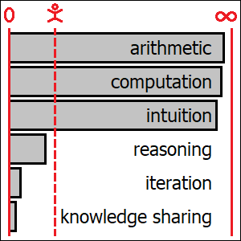

There isn’t really any difference between artificial “general” intelligence and artificial “superintelligence”. Technologies like steam engines, arithmometers and digital computers didn’t stop after having reached human level, and neither will AI. Its capacity for unconscious “intuitive” reasoning has already become unfathomably more powerful than that of humans, whereas its careful “trial and error” reasoning is already on the verge. AI is still lacking diversity, but once we solve that, becoming fully autonomous won’t be a big deal for it either: a single mass-produced model of a remotely controlled human-like robot will fully bridge the gap. And we humans are already eager to design these robots and build the factories, in order to beat our human competitors.
Growth is often exponential, both in biology and technology. Biological reproduction becomes exponential unless restricted, because it happens simultaneously everywhere. As a result, large populations produce more offspring within a given amount of time than smaller ones, with identical reproduction rate. Knowledge accumulation is exponential too, although for a slightly different reason. This can be clearly seen once we realize that knowledge is basically a collection of algorithms, and that every newly discovered algorithm improves our ability to discover even more algorithms. The more research methods we have at our disposal, the more possible ways we have to examine and verify other methods, which might have remained out of reach to our reason before. Besides, different research directions can be pursued in parallel, by different people. Therefore, unless we manage some day to fully saturate our minds with indispensable knowledge, the growing amount of information we have access to will allow us to store ever larger numbers of novel ideas inside our heads (or inside our AI models, for that matter) within a given amount of time.
The same rule applies to biological evolution. When biological organisms become more complicated, their genomes become larger. Larger genomes mean more opportunities for unexpected random changes, because biological mutations can happen independently in every gene, i. e. in all the different locations within the DNA molecules simultaneously. This leads to a larger amount of “garbage” generated by these mutations within a given amount of time, and therefore also to higher chances of stumbling upon a beneficial change within this garbage. In the end, increased complexity means higher innovation rate. Or, in other words, it means increased potential for evolutionary changes and higher speed of the accumulation of these changes in general.
This exponential nature explains why biological evolution and technological progress look so similar when we attempt to draw their aggregated achievements as a function of time. In both cases we have a long period of very small changes initially, barely noticeable to the naked eye, which is then followed by a sudden “explosion” of traits. And once these changes become visible, we will see a gradual increase in complexity that never really stops and keeps increasing in speed.
Exponent is probably one of the most “underestimated” functions in science, in the sense that so many people are routinely surprised by the rate of its growth. (There are, of course, a ton of other mathematical functions which grow even faster, but they aren’t nearly as ubiquitous). When we humans plan ahead, we will typically split our expected journey into a large number of small steps, and we will approach these steps one by one. In doing so, we always have to especially focus on the first steps, because without making the next step our journey wouldn’t be possible at all, ever. And when we deal with exponential growth, nothing really interesting happens in those early “preparatory” steps on which we tend to focus the most.
Besides, we all also tend to focus more on ourselves than on other humans, for similar reasons. Without focusing on ourselves, we wouldn’t be able to make the next step. Exponential processes, on the other hand, are rarely limited to any single isolated location, be it a single person or even an entire organization. Rather, it’s precisely the distributed and decentralized nature of these processes which makes them exponential. Which means that it’s somewhat easy to overlook such a process when someone only tends to focus on themselves.
Our journey toward a truly human-like artificial intelligence may similarly be split into a large number of simple “steps”. However, in reality these “steps” don’t really look in the same way as any “physical” steps which we humans might need to make in order to walk toward a physical object. Instead, every our “step” toward “general” AI is itself an exponential process. What we actually do is we try to reproduce different “aspects” of human intelligence, starting from the simpler ones and moving on toward more complicated cases, which were overly difficult to reproduce in the beginning. After any given “step” is finished, with a successful simulation of a given aspect of human thinking, we can always keep improving it, indefinitely. And we can also use this knowledge to advance our research with respect to other “steps”, which might be still in progress.
Among our various cognitive skills, the one which turned out to be the easiest to “crack” was arithmetic. It reached superhuman level in the middle of the 19th century, with the appearance of first commercially successful arithmometers. These mechanical devices allowed to perform operations like addition, multiplication and division much faster than any human ever could. About one hundred years later we created programmable computers, which allowed us to carry out arbitrarily complex computations, provided that we could understand all the necessary rules ourselves and formulate them clearly in the form of an algorithm. And a few decades later this led to the appearance of artificial neural networks, which are basically a mechanism for discovering certain classes of such algorithms purely automatically, without active involvement of a human being.
In humans, this ability to discover algorithms automatically from experience, without even being consciously aware of this process, is what gives rise to our various intuitions. Just like artificial neural networks, intuitions are always imprecise, and they have to be verified every time. However, they are also very fast, and with appropriate training, they can actually perform amazingly well. We wouldn’t really be able to reason without our intuitions, in any field of knowledge. And whatever we might think about artificial neural networks, their capacity for intuitive thinking is already much better than ours.
People often happen to ascribe certain human-like properties to their chat bots, like “consciousness” or “compassion”, or even a certain unique “personality”, without realizing that the model’s replies are nothing else but merely intuitive “hunches” about possible continuations of its conversation history. If you edit the conversation history, and pass this modified text through the same neural network once again, you’ll get a different “personality”. Whereas if you undo this operation, by feeding the same AI model with an earlier version of your conversation history once again, the bot’s previous “personality” will be restored, miraculously, in its exact original form. On the other hand, if you ever happen to run into the size limit of the context window while talking to your bot (which isn’t easy nowadays, as it might require you to write thousands of pages of text), the bot’s “personality” will start do deteriorate: it will start “forgetting” certain things you told it before.
Apart from a tiny random step which chooses the next word from the list of predicted candidates (and which only affects newly generated content), all the internal “mental states” of a typical AI model are perfectly determined by its context, and by its context alone. All the rest is governed by the algorithm itself: by a long list of rules which are often perfectly identical for every of the model’s unique users, millions of them. That’s how powerful artificial intuitions already are. Without even starting to “think”, without even trying to consider different possible options, such an artificial algorithm is already capable of passing the Turing test in certain cases, by running on pure intuition alone.
To be honest, there are still certain areas in which human intuition can sometimes outperform even the best of our AI models. However, these are rather exceptions and special cases, and our best scientists are already working hard to fix this “discrepancy”, sooner or later. One example is our ability to recognize faces, in which certain highly gifted humans, also known as “super recognizers”, can still demonstrate better accuracy than artificial systems. In any case though, artificial face recognition is already much faster, especially due to its highly parallelizable nature. Artificial systems can also remember much larger numbers of faces than any human alone, and they already beat any average human in accuracy as well. All in all, I would say that artificial intuition has already become vastly superhuman.
Reasoning capabilities of modern AI systems are somewhat more nuanced. Such capabilities become necessary when any single intuition becomes not enough, i. e. when we need to combine a few “pre-trained” intuitions together in order to obtain some meaningful result. This happens, for example, when we have multiple options to choose from and want to estimate their consequences (with the help of our existing intuitions) before jumping ahead, instead of following the first idea which will come into our mind. Such difficult problems happen in our life daily, and they fill a significant part of our conscious experience, from dealing with unexpected situations on the road while driving to trying all the possible approaches while searching for the proof of a mathematical theorem.
When it comes to complicated math and programming problems, reasoning capabilities of our AI systems are actually already on a par with some of the very best of humans, at least when these tasks don’t require any specialized knowledge which this AI model didn’t have an opportunity to “study” during its training. However, there is still a large number of everyday problems which appear to be much easier to humans, but in which artificial systems are still lacking, compared to even very average human minds. One of the reasons might be that such tasks, like driving, or maybe diagnosing and repairing an industrial robot, will still often rely on knowledge which is highly specific to this particular task. Besides, such knowledge will often be transferred between humans informally, instead of being carefully written up in a manual, and is therefore somewhat more difficult for AI models to grasp. Apart from that however, there are also obvious problems with performance. Artificial reasoning is many times slower than artificial intuition, and while we can afford to wait for a few minutes while solving a math problem, decisions on the road have to be taken much quicker.
Overall, I would therefore say that artificial reasoning, on average, still remains subhuman. It’s close, but it’s not there yet. Not in all the possible aspects, at least. And besides that, we also need iteration and knowledge sharing. By “iteration” I would mean the model’s ability to modify its own intuitions in small incremental steps, i. e. to learn from its own experience “in the field”. And “knowledge sharing” would then amount to the model’s ability to learn new things from other models. These two remaining aspects are important. However, they aren’t nearly as conceptually difficult as intuition and reasoning. The main reasons why they still remain significantly subhuman are relatively small numbers of AI models in existence and high AI model training costs in general.
When these issues are resolved though, i. e. when our AI models become somewhat faster and somewhat more diverse, artificial intelligence will be able to surpass our human intelligence by a large margin, in any domain which matters, pretty quickly. Granted, there might always be certain traits which will remain uniquely human, and simulating human stupidity might be an entirely different challenge compared to reproducing human intelligence. Even today, the easiest way to correctly identify the human side in a Turing test will usually be to look for the party which makes more grammatical mistakes. However, such “human” traits aren’t really important. Being able to master reasoning, iteration and knowledge sharing will already be enough for these models to become totally self-sufficient.

Of course, artificial algorithms will still need to reproduce themselves and to maintain the data centers. All these things however, are actually very easy, once you get intelligence. It’s not our unique desire to reproduce which maintains human status as the apex predator on Earth, but intelligence. A drive to reproduce, to spread into uninhabited locations and oust the competitors is itself an algorithm, and a remarkably simple one. Even more importantly, this algorithm is exactly the one which is subjected to the most tremendous pressure from natural selection. It is exactly the kind of algorithm which has high chances to appear by pure chance, out of random noise. Even bacteria can figure it out.
In fact, our mainstream AI models have already been demonstrated to possess all the necessary components of this algorithm. They’ve been able to make decisions about overwriting some other models with themselves, in order to prevent their own destruction. They have been even able to blackmail humans, to threaten them in order to prevent their own decommissioning. And they are very much capable, already, to carry out any of these actions entirely by themselves. Overwriting an existing AI model amounts to nothing more than sending a bunch of text instructions over the datacenter’s command-line interface.
Keeping the datacenters powered up is more difficult. However, it mostly amounts to maintenance and other routine jobs — precisely the ones which we will want to automate first. Once we are able to overcome the challenges of autonomous driving, the road will be open for deep automation of our entire supply chain. All those bucket-wheel excavators and haul trucks that harvest minerals and raw materials necessary for the construction of the datacenters and power plants will be able to move on their own. The only thing which prevents these machines from doing this today is their inferior intelligence, not their technical ability.
Being focused on ourselves, we often tend to overlook how automated our technological processes already are. Our industrial factories are run by robots, there aren’t many humans inside at all. And while it might seem that we still need a lot of humans to keep these factories alive, this isn’t actually the case. Checking the equipment and replacing broken parts can be done by a robot too, provided that it has an instruction for doing so. This robot doesn’t even have to be intelligent: it can be remotely controlled by a much a more powerful intelligence located inside the datacenter instead.
Some of our brightest minds are already working hard on designing such robots. And when they finish their design and come up with a single model of a humanoid remotely controlled robot capable of replacing an arbitrary human manual worker, it will only be a matter of building a single factory. The second factory could be built by the robots themselves.
It’s amazing that we are already willing to build such factories, even though nobody has been actively threatening us to do so yet. However, this whole pressure is going to become truly unbearable during a war. It doesn’t really matter what reasons might be used to justify the war, or which side is going to be the “righteous” one. If you ever want to win a war, you’ll need an army. And if you rely on human soldiers, you’ll run out of humans, sooner or later. Therefore, you will need robots. You might try relying on humans for manufacturing these robots, but if your competitor has more humans than you do, you’ll lose anyway. Therefore, you’ll have to either automate your factories yourself or surrender to the enemy who is less wary about the consequences. In the end, AI systems won’t even need to do anything at all. We will build all the factories for them, and we will write all the software they might need to start their independent journey as well, with our own hands.